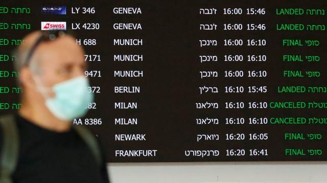

德国疫情日记⑦：德国人为什么不爱戴口罩？
原文链接 备份链接 体坛周报全媒体驻德国记者 杨子江 在北威疫情愈演愈烈的时候，巴伐利亚还是能买到消毒液的，我就曾在朋友圈秀过这边超市库存很多的消毒液，但是仅仅两天之后，当北威州的朋友恳请我去代买几瓶的时候，柜台上已经空空如也了。德国的媒 …
体坛周报全媒体驻德国记者 杨子江
德国人喜欢度假和旅游，之前德国媒体披露说德国封边境的时候还有10万德国游客在海外，但事实证明这一数据并不准确。德国外长马斯披露说，德国在境外的游客至少有20万，经过这几天疯狂的撤侨，也不过只拉回了3万人，仍有17万海外游子。德国政府已经竭尽全力了，在接下来的一段时间内，每天大概能撤回1万人，争取在两周内撤侨完毕。

我们要说的一点是，这里说的是度假，而不是旅行。德国人为什么喜欢度假？首先一个重要的原因，是德国人假多，正常情况下，德国人的平均带薪年假是26-30天，再加上双休日和节假日多，德国人可以自由选择出行的时间很多，不用像中国那样只能在双十一或者春节假期期间高峰出行。德国很多大公司还设有忠诚奖，那就是工作够一定时间后，给每年一两天的带薪假期。带薪年假、双休日再加上每年的新年、复活节、国庆日、圣诞和其他一些大大小小的宗教节日，德国人每年休150天左右很正常。
当然，由于德国孩子们的假期是相对固定的，还会导致德国在复活节、暑期和圣诞形成出行小高峰。本次新冠疫情在很大程度上是改变了德国人的复活节假期，所以连德国总理默克尔都说：“在家度假其实也是复活节的一个选项。”由于疫情的关系，德国人封锁了边境，也导致了很多人复活节的假期安排泡汤了。
德国人有钱都花在了度假和吃喝玩乐上。因为社会福利制度好，所以德国人基本不存钱，月光族很多。15年前，我有个上海的朋友在波恩买房付首付，她在上海的父母支援了她20万欧元，而她老公的父母再加上爷爷、奶奶、姥姥、姥爷一共给凑出了1万欧元，钱花在什么地方了？度假去了。
世界银行的一份数据显示，法国人平均每年的度假天数是30天，世界之最，德国人是24天，中国人是5天。德国人最喜欢去的三个度假地方分别是德国本土、西班牙和意大利（我好像突然理解为啥这三个地方是欧洲重灾区了）。从2016年的统计数据来看，德国人能接受的双人度假费用是5500欧元，折合大概4万人民币左右，但通常来说，德国人度假的人均日消费是90欧元。
中国人度假喜欢去不同的地方，但很多德国人一生认准了一个地方，一个酒店。我和太太去土耳其度假的时候在一家酒店住了两周就有些不甘寂寞了，但我们同行的一对德国夫妇在这家酒店已经住了一个月了，更让我们难以置信的是，他们已经连续8年在同一家酒店度假了……在欧洲很多度假酒店，前台工作人员会说英语和德语是标配。
曾有一种说法在中国流传甚广：德国人度假的权力神圣不可侵犯，度假的时候德国人根本就不工作。这其实不太准确，最新的数据显示，至少有72%的度假者是能联系上的，这其中电话能联系上的占66%，短信能联系上的占58%，电子邮件是48%，只有28%的度假者是真的“人间蒸发”了~
原文链接 备份链接 体坛周报全媒体驻德国记者 杨子江 在北威疫情愈演愈烈的时候，巴伐利亚还是能买到消毒液的，我就曾在朋友圈秀过这边超市库存很多的消毒液，但是仅仅两天之后，当北威州的朋友恳请我去代买几瓶的时候，柜台上已经空空如也了。德国的媒 …
原文链接 备份链接 体坛周报全媒体驻德国记者 杨子江 巴伐利亚上上周末宣布进入灾难状态的，随之绝大多数商户和所有娱乐场所在周三关门。而就在巴伐利亚进入紧急状态之前的一天，我和爱人还必须带着儿子和女儿去看儿科医生，倒不是孩子们生病了，而是儿 …
原文链接 备份链接 3月16日，女儿彤彤三岁生日，滞留在酒店的周剑峰特意订了一个蛋糕，一家人给女儿过一个特殊难忘的生日 疫情暴发后，番禺城市便捷酒店成了不少隔离者和湖北客临时的“家”，至今，酒店内还滞留着超过110位湖北人 本文首发于南 …
原文链接 备份链接 凤凰新闻客户端 凤凰网在人间工作室出品 打开凤凰新闻客户端，搜索「在人间」并关注 本文四个主人公，其中两个，滞留武汉超过60天。一个为了省800块钱，从武汉转机，阴差阳错赶上武汉封城，只好带着女儿住在廉价旅店，欠下2万 …
原文链接 备份链接 但愿这一次伊朗也能像这些年来的“无数次”一样，在未来的某一天，一边轻描淡写地说一句 “همه چی درست میشه”（一切都会好起来的），一边迎接不知道又会是什么的下一次 3月17日，为预防感染新冠病毒，伊朗库姆的 …